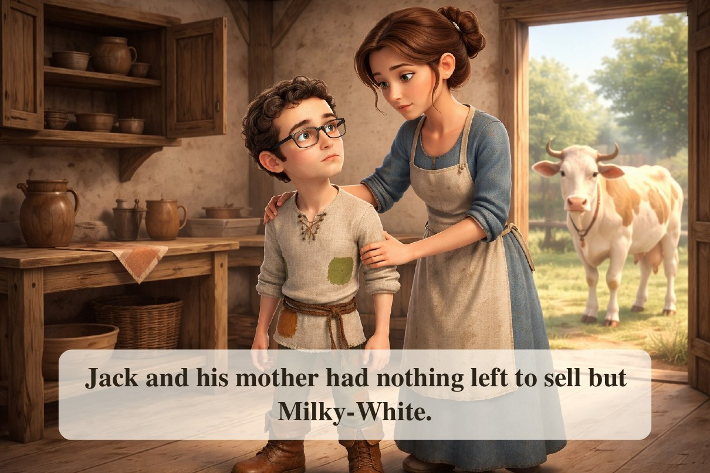
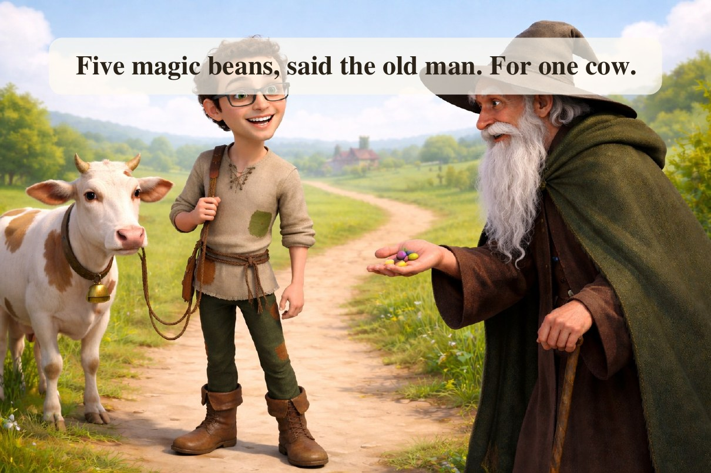
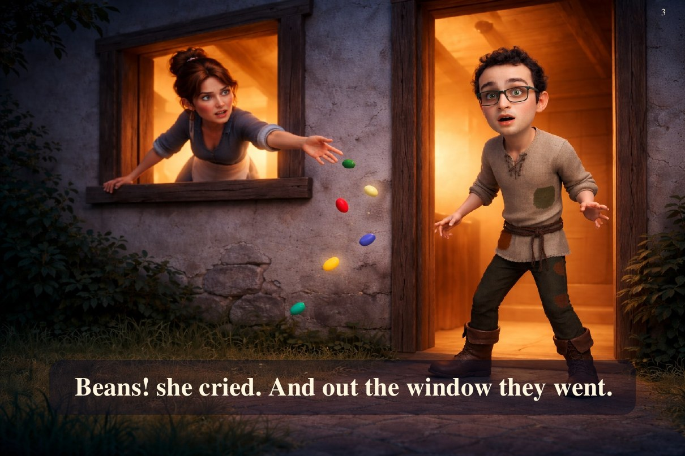
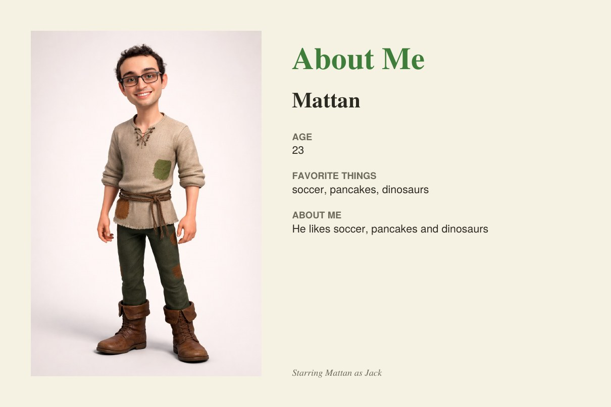

Please look at the photo, then all 4 pages of the book
An app turned this photo into a short "Jack and the Beanstalk" picture book starring the person in it. When you've looked at everything, go back to the survey tab and answer the questions.
1. The photo of the real person
2. The storybook the app made from that photo




That's everything. Go back to the survey tab to answer the questions.